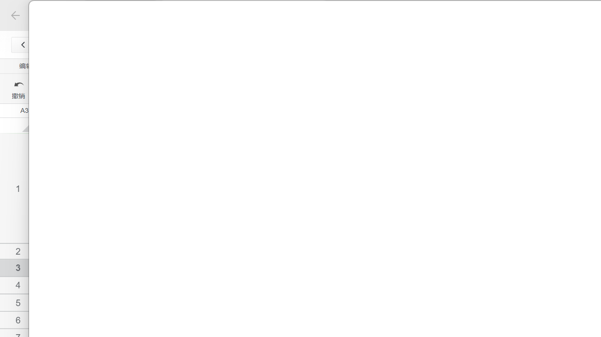

<h2>🖥️ FocusFlow 最新截图 — 系统托盘 + 图标版</h2>
<p class="subtitle">应用重启后截图，检查窗口是否正常、托盘图标是否显示</p>



<div style="margin-top:20px">
  <h3>🔧 已完成的修复：</h3>
  <table style="width:100%;border-collapse:collapse;font-size:13px">
    <tr style="border-bottom:1px solid #e5e7eb">
      <td style="padding:8px">🖼️ 应用图标</td>
      <td style="padding:8px;color:#22c55e">✅ main.ts 中已加载 build-resources/icon.png 设为窗口图标</td>
    </tr>
    <tr style="border-bottom:1px solid #e5e7eb">
      <td style="padding:8px">🔔 系统托盘</td>
      <td style="padding:8px;color:#22c55e">✅ 托盘图标 + 右键菜单（显示/退出）+ 双击恢复窗口</td>
    </tr>
    <tr style="border-bottom:1px solid #e5e7eb">
      <td style="padding:8px">⬇️ 后台运行</td>
      <td style="padding:8px;color:#22c55e">✅ 关闭窗口 → 隐藏到托盘，不退出。右键托盘 "退出" 才真正退出</td>
    </tr>
  </table>
</div>
